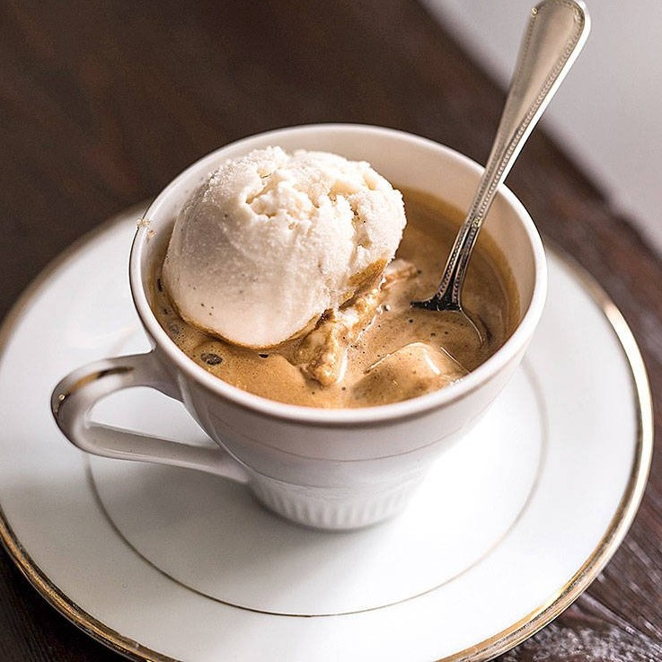

Увидели картинки кофе и сами захотели приготовить что-нибудь? На этом сайте вы найдёте рецепты всех напитков, о которых говорилось здесь.
Кофе - это напиток из жаренных и перемолотых зёрен кофейного дерева или куста, являющийся глобальным культурным явлением. Оно стало огромной частью дневной рутины более половины всего взрослого населения Земли
Кофейный мир богат и разнообразен так же, как и чайный. Кофе – это такая отдельная планета, которую можно изучать годами. Чем больше погружаешься в этот мир, тем более интересен процесс познания разных видов и сортов.
Если вы всегда хотели узнать больше о кофе, но не знали с чего начать - вы точно попали по адресу! На этом сайте вы найдёте базовую информацию об этом чудодейственном напитке.
История
Первые упоминания напитка из ягод кофейного дерева относятся примерно к 600 году нашей эры, его делали в Каире и Мекке. Существует легенда о пастухе Калди из Эфиопии, который заметил, что его козы становятся бодрыми после употребления красных ягод с куста. Примерно в 1100 году арабы придумали сначала измельчать ягоды, а потом варить, чтобы получался более насыщенный вкус. К 1200 году кофе попал на территорию современной Турции.
В XV веке появились первые крупные плантации в Йемене, где выращивание и торговля кофе были строго контролируемы. Йемен стал родиной культурного кофе, а его порт Моха дал имя знаменитому сорту «Мокко».
В XVI веке кофе через Османскую империю попал в Турцию, где зародилась традиция приготовления турецкого кофе — густого и ароматного напитка, который заваривается в специальной джезве. В Европу кофе впервые привезли в начале XVII века. Первая европейская кофейня открылась в Венеции в 1645 году. Оттуда напиток распространился по другим странам.
К XVIII веку кофейные деревья уже выращивались в Латинской Америке, а сам напиток стал важным экспортным продуктом для множества стран.
В начале XX века был придуман способ удалять кофеин из кофе, оставляя при этом его вкус. Так появился декаф — кофейный напиток, безопасный для людей, которые по медицинским показаниям не могут употреблять кофеин, влияющий на артериальное давление. В течение XX века производство и популярность кофе росла. Открывались сетевые кофейни, разрабатывались рецепты новых напитков. К 1995 году кофе стал самым популярным напитком в мире — ежегодно выпивалось более 400 миллиардов чашек кофе. В XXI веке кофейни стали больше, чем местом, где пьют кофе. Это пространства для работы, встреч, учёбы и отдыха. Кофе стал неотъемлемой частью массовой культуры: его можно увидеть в фильмах, книгах, на картинах.
Виды зёрен
Насчитывается более 90 видов растений, относящихся к роду кофе, но в промышленных масштабах используются только два из них: кофе аравийский (вид зерна - "арабика") и кофе конголезский (вид зерна - "робуста")
Робуста
Робуста считается менее изысканным сортом. В то же время она содержит больше кофеина. Вкус робусты, как правило, грубый, напоминает злаки и орехи. Он достаточно «плоский» и настоящим ценителям кофе кажется простым, горьковатым.
Арабика
Арабика — наиболее распространённый вид кофе. Вкус арабики сложный и многогранный. Часто описывается как фруктовый, цветочный, шоколадный, карамельный, с нотками орехов, ягод, цитрусовых или мёда. Присутствует ярко выраженная кислинка.
Кофейные напитки
Американо

Кофе по-венски
Эспрессо
Флэт Уайт

Гляссе

Капучино

Латте

Макиато
Раф
Вас также может заинтересовать
Интересно в какой стране больше всего пьют кофе? Хотели узнать, кто придумал первую кофе-машину? Откройте для себя новое о вашем любимом напитке здесь!
Хотите превратить кухню в собственную маленькую кофейню? Наши курсы "Домашний бариста" смогут вам с этим помочь! Готовьте кофе на уровне профессионального бариста не выходя из дома, чтобы радовать себя и гостей.
Утро бывает разным: бодрым, сонным или суетливым. А кофе — тёмным, сладким, молочным или крепким. А что, если они — отражение наших характеров? Пройдите этот тест, чтобы узнать, какой сорт кофе скрывается в глубине вашей души. Всего 9 вопросов — и ваша кофейная личность раскроется!